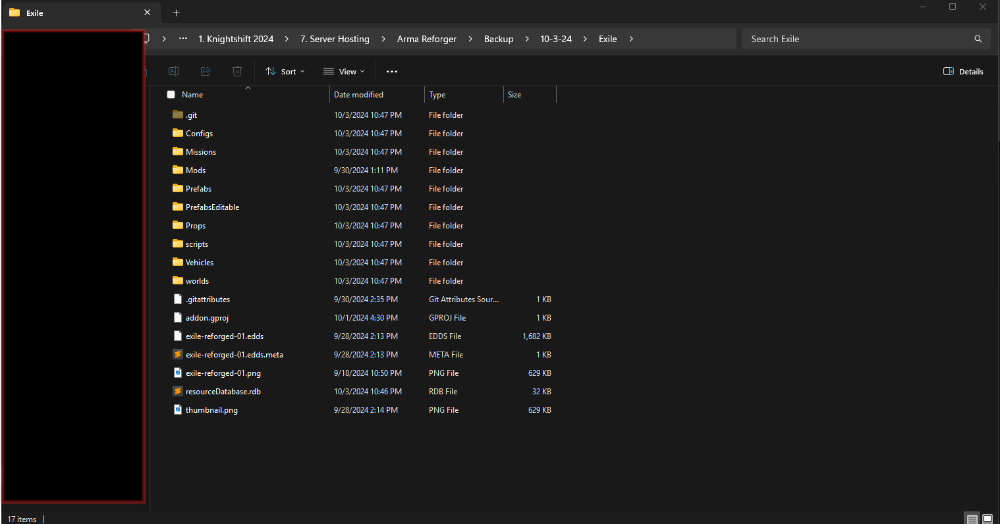
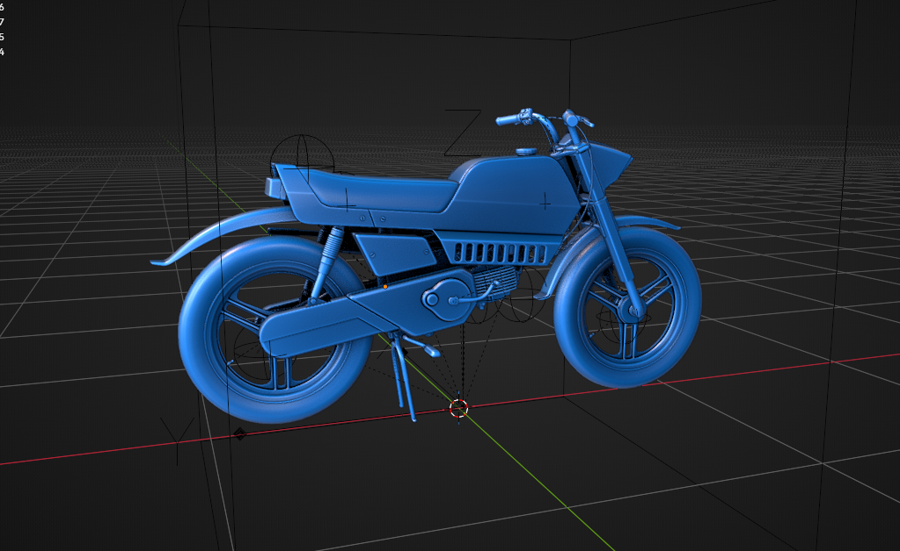
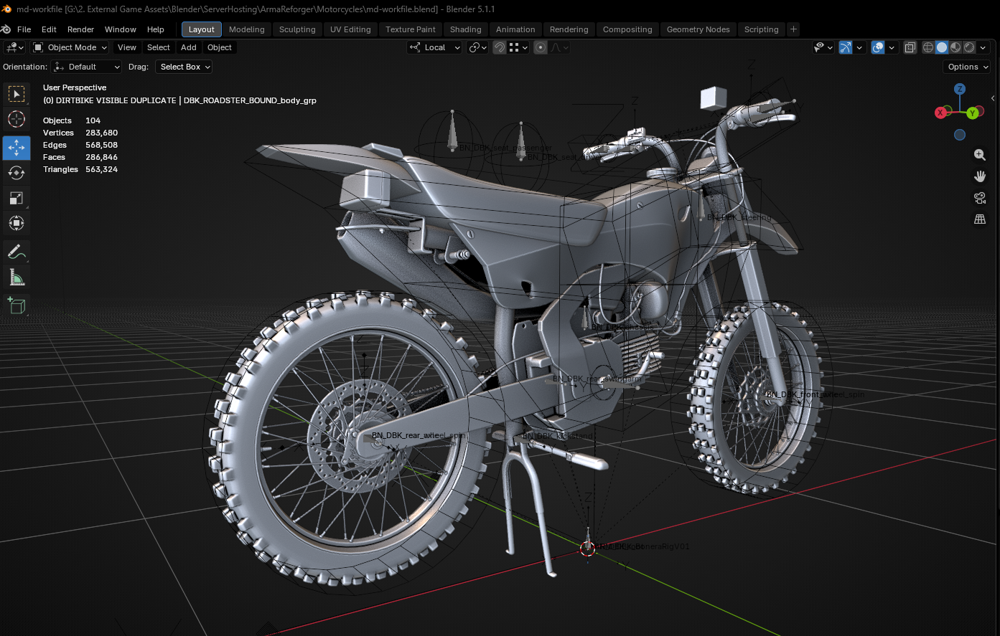
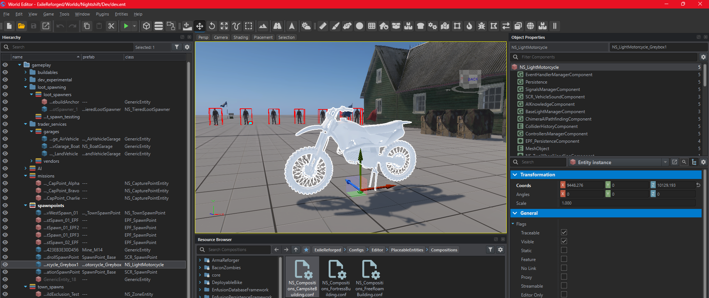
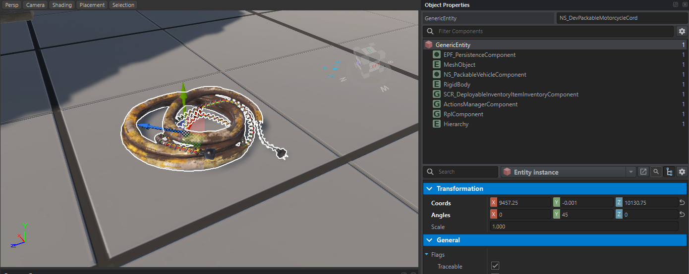
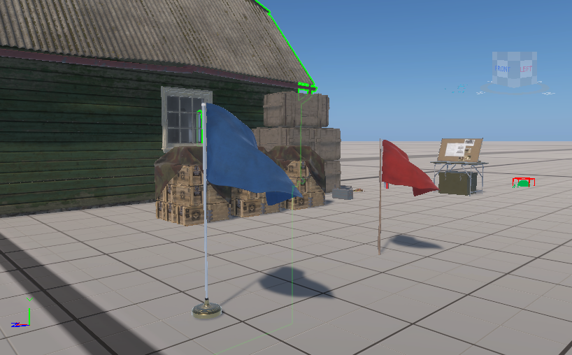

Field note
This started as a short two-week sprint break from AfterDark to see how far we could get in Exile Reforged / Homefront.
That break turned into a useful checkpoint, and one of the real solves from the two-week pass was persistence.
The first recovery pass was about proving the project could come back to life at all. The next pass has been more useful: getting Exile back into a state where the major survival-service pieces can be reasoned about again without pretending everything is final.
The project is now sitting at a cleaner Arma Reforger / Enfusion checkpoint. Persistence work is active again. Deploy and respawn flow is back under review. Loot progression, building and base ownership, mission scaffolding, zones, economy, and faction structure all have Nightshift-owned direction attached to them instead of only existing as old project intent.
That matters because Exile is not useful as a museum piece. It is useful if it can become a live, testable survival surface.
The main focus right now is consolidation: taking the addons and mod dependencies that helped validate the idea, then replacing or reducing them with Nightshift-owned code, content, and systems wherever that makes sense.
Related archive: the broader standalone target is documented in Exile Reforged - Long-Term Standalone Vision.

What this checkpoint means
The important part of this stretch is not one isolated feature. It is that the project has enough shape again to separate real progress from wishful thinking.
At a high level, Exile Reforged now has active work or scaffolding around:
- persistence and session-to-session player state,
- deployment, death, and respawn handling,
- tiered loot progression,
- building, camp, and base ownership concepts,
- offline base loading and unloading behavior that gives the project a real answer for offline raiding pressure,
- flag ransom and black-market buyback behavior for stolen base flags,
- owned vehicle class work starting with the dirt bike,
- deployable utility items like the extension cord feature,
- safe zones, mission exclusions, and build exclusions,
- capture-point and mission-marker prototypes,
- mission waves and spawnable mission visuals,
- owned shop, wallet, and vendor direction,
- faction structure and replacement hostile NPC direction,
- and a dev-world path where features can be placed and tested deliberately.
That is a much better place to pause than the earlier recovery state. The project is no longer only "we found the old work." It is now "we can identify what systems matter, where they live, and what needs proof before the project earns a stronger public claim."
What is working now
The important part of this checkpoint is that the work is no longer only theoretical or source-side.
The live loop has been brought back into working shape: death, deployment, respawn, loadout return, faction continuity, inventory behavior, and persistence are all moving through the test path now. Persistence was one of the original project's major blockers, so getting it working inside this two-week recovery window changes the update from "the project has promising scaffolding" to "the recovered project is behaving like an actual survival loop again."
That is the point of the video and the checkpoint. Exile is not just recovered archive material anymore. It is back in a state where the core systems can be played, watched, and pushed forward from a working baseline.
There is still normal production cleanup ahead, but the difference matters: this is not a paper milestone. The main loop is working and tested right now.
Consolidating the project
The biggest practical direction now is reducing dependency weight.
Some external addons and mods were useful for proving the survival loop. They helped validate the shape of the project. But the project cannot stay there forever if it is going to become a Nightshift-controlled server with a cleaner identity, clearer licensing, and systems that can be maintained long-term.
That is why the current pass is about culling dependencies where needed and replacing key pieces with owned code and owned content.
The largest stride in that direction is the motorcycle.
The starting point was an Adobe motorcycle model. That source was converted away from its original road-bike shape and pushed into a dirt bike direction so it can become a Nightshift-owned model tied to the new vehicle class.
The model is not final yet. Some wires still need cleanup, several new body parts need another pass, the muffler needs refinement, handguards need to be added, and there should probably be a racing-livery version after UV and paint work. Some brake parts likely need to be doubled on one wheel, and the front tire should probably become slightly larger and thinner.
But it is far enough along to start developing the new two-wheeled vehicle class in game, which is the actual priority. The vehicle pawn is already up to the point of vehicle possession testing. The next step is movement: sorting it out, tuning it, then expanding it into a playable vehicle path.
The extension cord feature is also back in the project. It was ported forward from the older Exile work and is working now, though its final behavior may still change as the base and utility systems settle.




One of the more important solves is offline raiding.
The project now has a path for loading and unloading bases around player presence, which changes how base vulnerability can be handled when a player is offline. That is a significant design piece for any persistent survival server. It means base ownership, raiding pressure, and player absence can be treated as part of the system instead of only as an admin rule or community expectation.
The flag system also has a new pressure valve.
Stolen flags can now be ransomed to the black market for buyback. Losing the flag disables the constructed base until the owner gets it back, which turns a base raid into a consequence that is serious without always needing to flatten the entire structure.
The current ransom calculation is intentionally simple and may change:
blackMarketBuyback = clamp(minRansom, maxRansom * 0.75,
flatBase + buildValue * 0.25 + storedGearValue * 0.05
)
That formula keeps the price tied to the base and stored value without letting it run completely open-ended. It gives the system a starting point that can be tuned once real player behavior starts showing where the pressure is too soft or too punishing.

The name may change
There is also a branding question opening up.
Exile Reforged still explains the project's roots clearly. The influence is obvious: Arma survival, Exile, DayZ, long-form looting, bases, risk, faction pressure, and player-driven stories. But the project is starting to become different enough from the original Exile framing that the name may not stay forever.
One possible direction is Arma Reforger: Homefront, if that space is clear and no other active server is already using it.
That would let the project keep the nods to Exile and DayZ without being boxed in by them. The goal is not to erase the roots. The goal is to give this version room to become its own Nightshift take on persistent Arma survival, and maybe something that can grow past the first frame it started from.
Licensing and platform runway
Another reason the project is waking back up now is that the Arma Reforger ecosystem has become friendlier for this kind of long-form server work.
That does not mean ignoring licensing. The opposite is true. The current cleanup pass is about collecting licenses, attributing dependent material correctly, getting monetization permission where needed, and replacing dependencies where ownership or permission is not clean enough for the direction of the project.
The other major win is platform runway.
Bohemia positions Enfusion as the engine powering its next generation of games, including Arma 4, and describes Reforger's toolset as the first step on the road to Arma 4. That makes the work happening now more valuable than a one-off server experiment. The systems, content discipline, and Enfusion workflow built here should be in a better position to move forward when the next platform arrives.
Source: Bohemia Enfusion Engine
Why this is the right pause point
This is also a practical stopping point before shifting attention back to AfterDark.
AfterDark needs the next MVP push after a two-week break, and it makes sense to leave Exile at a clean checkpoint instead of dragging it into another half-open sprint. Exile now has a working tested loop, a visible persistence proof point, and enough structure to resume later without losing the thread.
That is a useful win.
The next Exile pass can build from the working baseline instead of trying to rediscover it. The honest summary is simple: the revival is no longer theoretical, and the survival loop is back in motion.
Signed, Nightshift